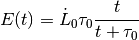
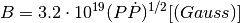
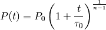

Pulsar¶
- class gammapy.astro.source.Pulsar(P_0=<Quantity 0.1 s>, logB=10, n=3, I=<Quantity 1e+45 cm2 g>, R=<Quantity 1000000.0 cm>, age=None, L_0=None, morphology='Delta2D')[source]¶
Bases: gammapy.astro.source.SimplePulsar
Magnetic dipole spin-down pulsar model.
Reference: http://home.strw.leidenuniv.nl/~oberg/Pulsars/Verbunt_Heise_NeutronStars.pdf
Parameters: P_0 : float
Period at birth
logB : float
Logarithm of the magnetic field, which is constant
n : float
Spin-down braking index
I : float
Moment of inertia
R : float
Radius
Methods Summary
energy_integrated([t]) Total released energy at age t. luminosity_spindown([t]) Spin down luminosity at age t. luminosity_tev([t, fraction]) Gamma luminosity assumed to be a certain fraction of the spin-down luminosity. magnetic_field([t]) Magnetic field strength at the polar cap. period([t]) Period at age t. period_dot([t]) Period derivative at age t. tau([t]) Characteristic age at real age t. Methods Documentation
- energy_integrated(t=None)[source]¶
Total released energy at age t.
Time-integrated spin-down luminosity since birth.
Parameters: t : Quantity
Time after birth of the pulsar.
Notes
The time integrated energy is given by:

- luminosity_spindown(t=None)[source]¶
Spin down luminosity at age t.
Parameters: t : Quantity
Time after birth of the pulsar.
Notes
The spin-down luminosity is given by:

- luminosity_tev(t=None, fraction=0.1)[source]¶
Gamma luminosity assumed to be a certain fraction of the spin-down luminosity.
Parameters: t : Quantity
Time after birth of the pulsar.
- magnetic_field(t=None)[source]¶
Magnetic field strength at the polar cap. Assumed to be constant.
Notes
The magnetic field is given by:

- period(t=None)[source]¶
Period at age t.
Parameters: t : Quantity
Time after birth of the pulsar.
Notes
The period is given by:
